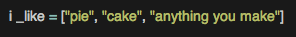
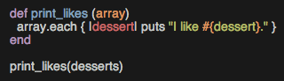

Blog Posts
We Get It. Enumerable is Confusing.
When learning how to code in Ruby, I would say that Enumerable is one of the most daunting classes in existence. It's already daunting enough to attempt to understand the very technical language in which the Ruby docs are written - but the Enumerables class takes that confusion to a whole new level.
However, the more I've learned about Ruby over the last two weeks, the more I realize that Enumerable is one of the most powerful classes that Ruby has to offer. Weilding Enumerable is sometimes like being a magician: all the complicated stuff happens behind the scenes, but the audience sees some mind-blowing results.
Enumerable Only Works with Classes with Each
One of the things which isn't immediately apparent about Enumerable is that it only works with classes which provide an each method. This is because Enumerable, by nature, goes through an object piece by piece. If there is no clear piece to iterate through, then Enumerable doesn't know how to treat the object. Two classes that meet this criteria include (but are not limited to) Array and Hash.
"But how do I use enumerable on a string?" you ask? At least, that's what I asked myself repeatedly this week. Well, that's easy - you break it up into an Array or Hash based on your needs. You merely need to figure out what criteria you use to break apart the string. Two good options are split and slice, which allow you to break apart the string in different ways.
But How do I use Enumerable?
So you have an object on which you can use Enumerable. What next?
First, keep in mind that Enumerable goes through each element in your object. Next, look through your Ruby Docs keeping in mind your goal. Let's look at an example.
Let's say we have an array full of tasty things:

Great! Well, this is great for our own reference. But your friend emails you because your birthday is coming up and she'd like to make you something tasty (you have good friends). You could email her this array, but that's a little rude - it's polite to use complete sentences, especially when she's doing something so nice for you. But how do you print out this array nicely?
You could print all these items out with an each method, and it might look like this:

But what if you used an Enumerable method? This assumes that you are iterating through each element in the array. Let's look at the same method using map.
"But that does the exact same thing with the same amount of effort?!" you say!
Well, yes. But this example is pretty straightforward! Let's look at something more complex.
Enumerable Allows for Complexity
One of the cool things about Enumerable is that you can easily do a fairly complex calculation very quickly. For example, let's say you don't want to overwhelm her, so you only want to print the first two options. There's a really handy Enumerable method for that called first! Let's look at how to use it and then talk about the method we've created.
Look at how classy that is! In this snazzy little method, we've taken the first two elements in the array and printed it out using map (we also could have used each, of course, since they're very similar). If you did this without the first method, you would have to use an iterator method or a loop - but with the first method, the method goes so smoothly!
Your Turn!
Now that you see the power of the Enumerable class, go take a closer look! What pre-built methods could help you accomplish complex tasks quickly? As you're becomming familiar with Enumerable, keep in mind that irb is your friend: if you don't quite understand it, test out the method in your virtual playground.